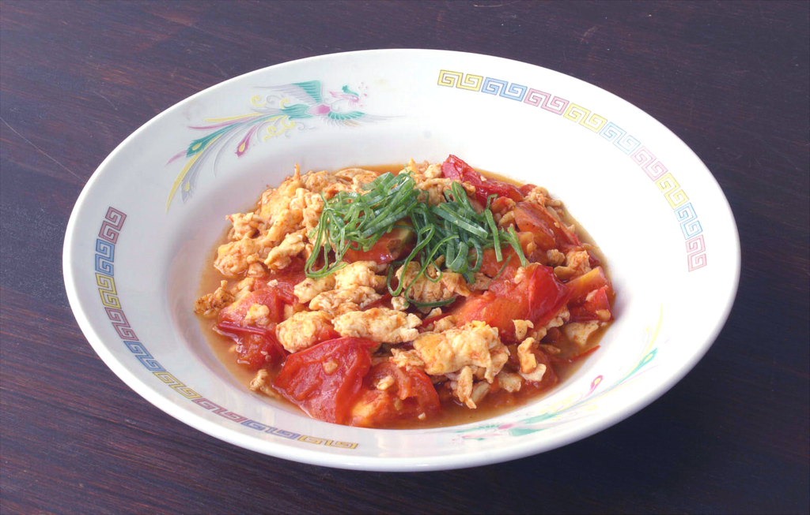

Stir-Fried Tomato and Eggs

Ingredients
- 3 eggs
- 1 tomato, cut into small wedges
- Green onions, to taste
- A little oil for frying
- A little soy sauce
- Salt, to taste
- Sugar, to taste (optional)
Directions
You'll need a pan or wok with a lid.
- Crack the eggs in a bowl. Add part of the salt and sugar. Whisk to combine.
- Fry the eggs in the oil. Remove the eggs.
- Fry the green onions for a few seconds. Add the tomatoes and cook until soft.
- Add the rest of the salt and sugar, plus the small amount of soy sauce, put the lid on your pan or wok, and cook for a couple of minutes.